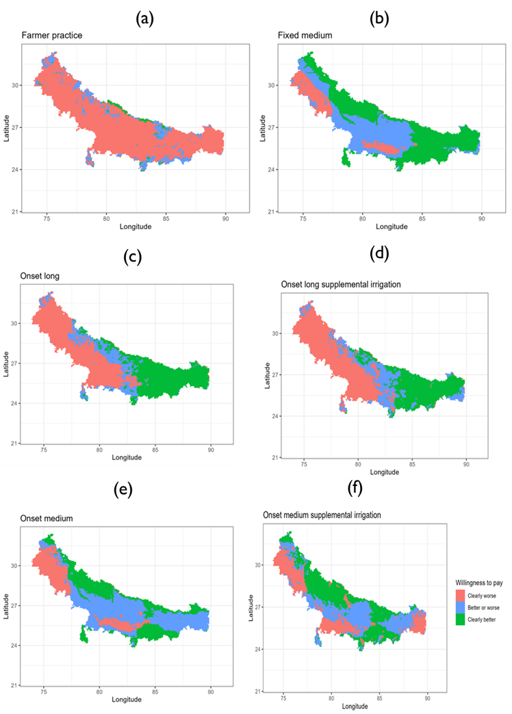

3 Spatial optimization toolkit: Computational risk-return modeling
3.1 Mean-Variance (EV) and Mean-Conditional Value at Riskk (CVaR) modern portfolio theory optimization
Purpose: Mean-variance analysis seeks to maximize returns at the minimum risk (or variance). The approach was introduced by Harry Markowitz to identify efficient diversification options for investments.
Advantages
- Allows selection of multiple alternatives beyond combinations observed in the data
Disadvantages
- Focuses only two moments (mean and variance) yet other moments of the distribution may also matter.
Stylized use case: Optimal sowing date and variety combinations
We use CSISA-KVK trial data to demonstrate the approach. The agronomic trials cover a 5-year period in 8 districts in the Indian state of Bihar.
Input data requirements: This is an outcome-based risk assessment requiring yield or profits data for multiple years for the same site.
Toolkit workflow
Mean-Variance optimization requires only the outcome variable for multiple realizations and portfolio choices. We then use quadratic optimization to identify the frontier and optimal weights indicating the amount of land or resources that should be devoted to particular choices.

Stylized outputs
Using a state level E-V optimization model of wheat yields, we find that HD-2967 sown before 10th November gives the highest returns and a risk neutral farmer would find it most beneficial.


Replication materials: https://eia2030-ex-ante.github.io/Risk_modern_portfolio_theory_EV_model/
3.2 Willingness to pay bounds for second order stochastic dominance approach
Purpose: The commonly used risk measures focus on central moments (e.g., variance, conditional value at risk, skewness) of the distribution. Yield distributions overtime and space are however more complicated such that one may need to consider the whole distribution when evaluating which agronomic practice will likely work where and when. The use of stochastic dominance especially second order stochastic dominance allows the relationship between the cumulative distribution function of the outcome and the expected utility maximization behaviour under risk aversion. A computational approach developed by Hurley et al (2018) allows one to compute willingness to pay lower and upper bounds for a new technology to second order stochastically dominate an old practice such that any risk averse farmer will choose the new technology.
Advantages
- Unlike mean-variance optimization, this optimization strategy considers distributional comparisons
Disadvantages
Computationally expensive especially when implementing across a large area of interest.
The comparisons are pairwise thereby requiring many combinations to come up with the best alternative for each pixel.
Difficult to apply with survey or agronomic datasets are it requires long timeseries. However, it is possible to implement the approach with monte-carlo simulated survey or agronomic trial datasets.
Stylized use case: Where to target sowing date advisories?
We use gridded crop growth simulation model results to identify scenarios that would be agronomically and economically beneficial even for a risk averse farmer.
Input data requirements
For the spatial exante (economic) component of the model, one only needs gridded crop simulation results for each of the scenarios.
Toolkit workflow
Figure 15 shows the workflow for implementation the computational second order stochastic dominance analysis.

Stylized outputs


Replication materials: https://github.com/AntonUrfels/econ-sims-bihar
Key references: For more methodological details of the approach, readers are referred to Hurley et al (2018).
Hurley, T., Koo, J., and Tesfaye, K. 2018. "Weather risk: how does it change the yield benefits of nitrogen fertilizer and improved maize varieties in sub-Saharan Africa?" Agricultural Economics 49: 711-723. Doi: 10.1111/agec.12454.